Hada placed Gravataí on the international sustainable-innovation map, showing that projects with global reach can emerge from local schools.
— Motion of Recognition from the Gravataí City Council, May 29, 2026.
Gravataí, Brazil · "Why", "How?", "When?"
My work moves between research, software, and youth-led initiatives.
More often than not, the interesting part begins when I take a step back... and the mark is already there.
Let's begin!
EXPLORE THE WORK → HOW I WORK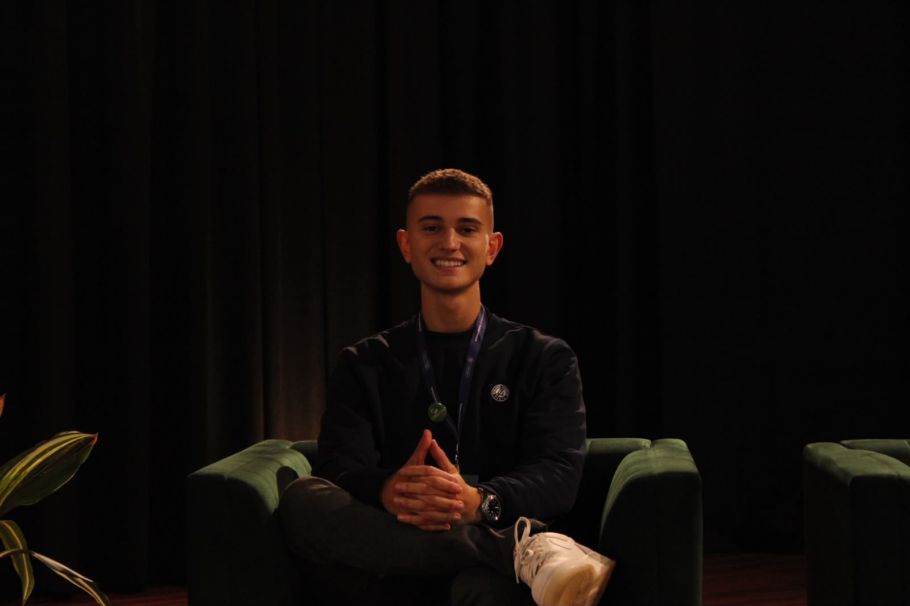
Reader discretion is advised.
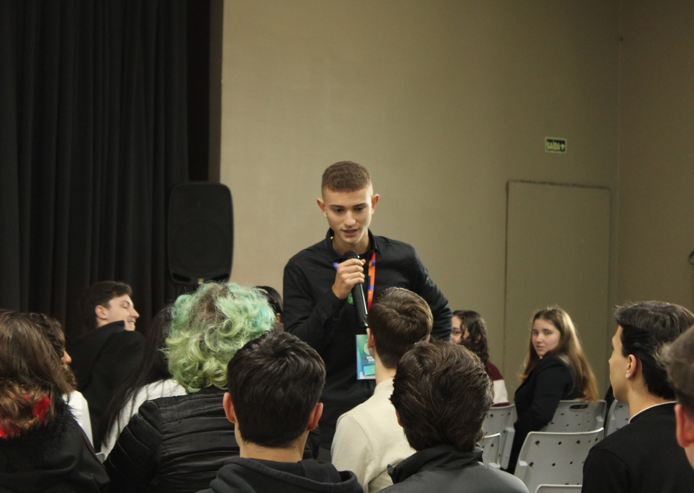
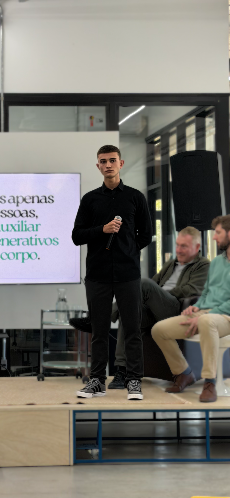
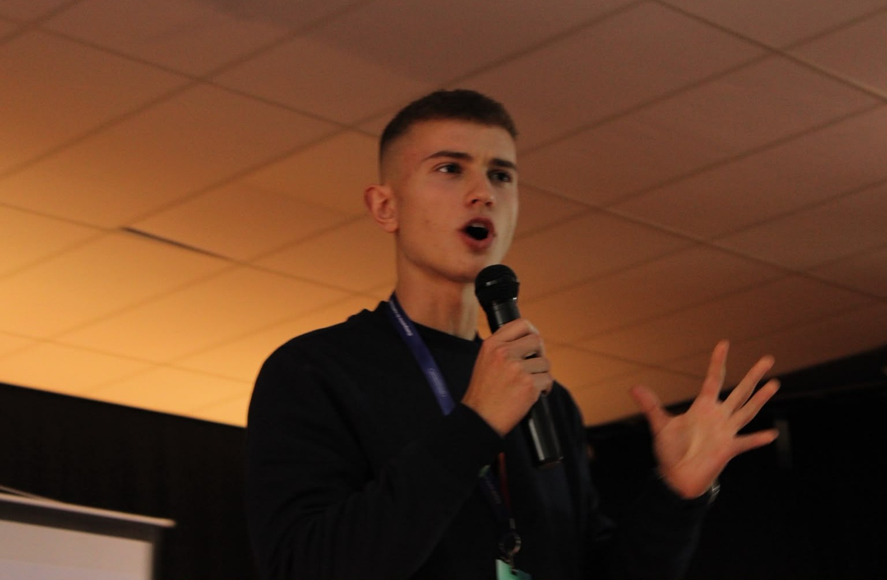
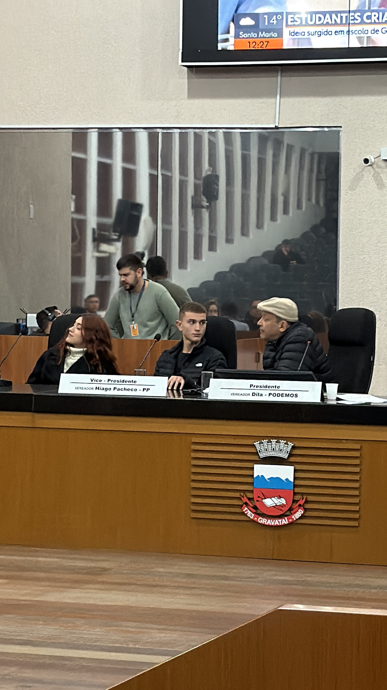
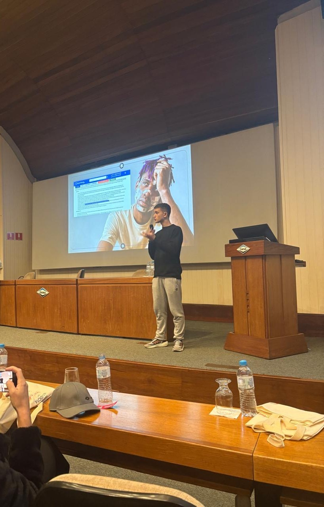
✱Biodegradable aloe and chamomile healing bandage
Hada placed Gravataí on the international sustainable-innovation map, showing that projects with global reach can emerge from local schools.
— Motion of Recognition from the Gravataí City Council, May 29, 2026.
Something as small as a bandage is used by millions of people every day, yet it creates waste and doesn't always support healing.
— The Earth Prize Newsroom, May 17, 2026
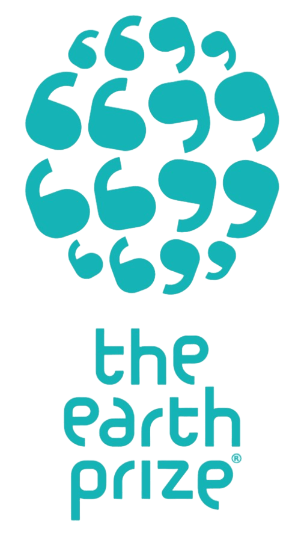
A symbol of untapped potential amid limited support for basic research and bureaucratic barriers to youth patent registration. Rio Grande do Sul had seen only two high school scientific projects gain national recognition. It not only breaks this trend but also serves as an inspiration for other cities in the state to invest in youth innovation in the coming years.
— Diário do Estado, national newspaper with +2 million monthly readers, May 19, 2026
Leading Latin American influencer on LinkedIn and a 13-time winner of the iBest Award for the country's best Economics and Business content
View the post ↗Exclusive licensee of CNBC, the world leader in business news, which is controlled by NBCUniversal, one of the largest media groups on the planet.
View the post ↗Part of an ecosystem generating R$ 1 billion in revenue, the company trains executives from Accenture, Carrefour, Visa, BASF, and Ford to the world's leading innovation hubs.
View the post ↗Aired on Jornal da Noite (Band TV), a premier national late-night news program with ~300K viewers across Brazil.
Featured on Jornal do Almoço (RBS TV / Globo affiliate), southern Brazil's dominant midday news broadcast, engaging ~890K daily viewers across 40+ municipalities.
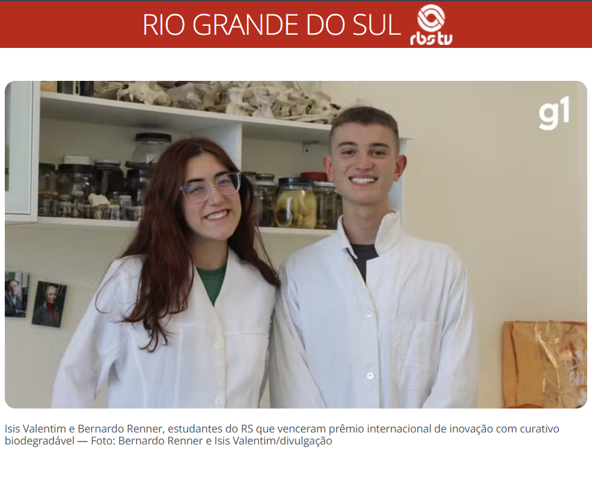
Students from Rio Grande do Sul win international innovation award with biodegradable bandage.Read the story ↗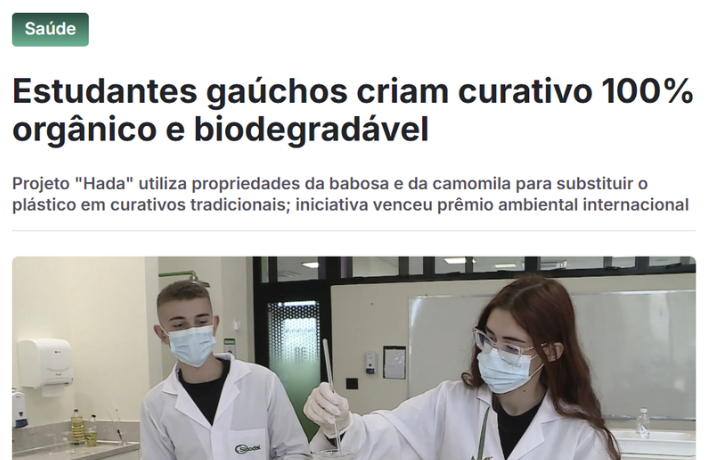
Students from Rio Grande do Sul create a 100% organic and biodegradable bandage.Read the story ↗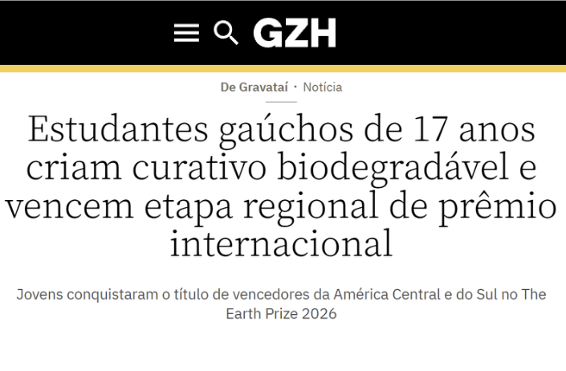
17-year-old students from Rio Grande do Sul create a biodegradable bandage and win the regional stage of an international award.Read the story ↗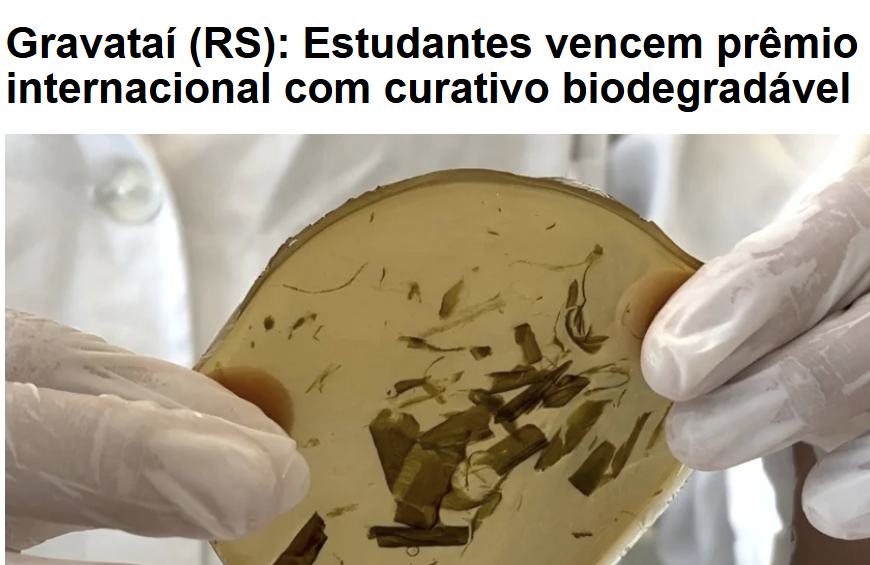
Gravataí (RS): Students win international award with biodegradable bandageRead the story ↗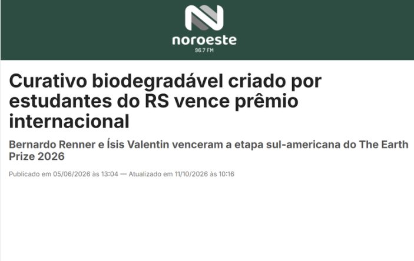
Biodegradable bandage created by students from Rio Grande do Sul wins international award.Read the story ↗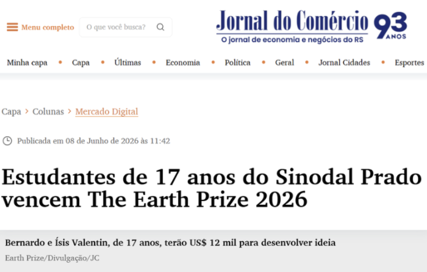
17-year-old students from Sinodal Prado win The Earth Prize 2026Read the story ↗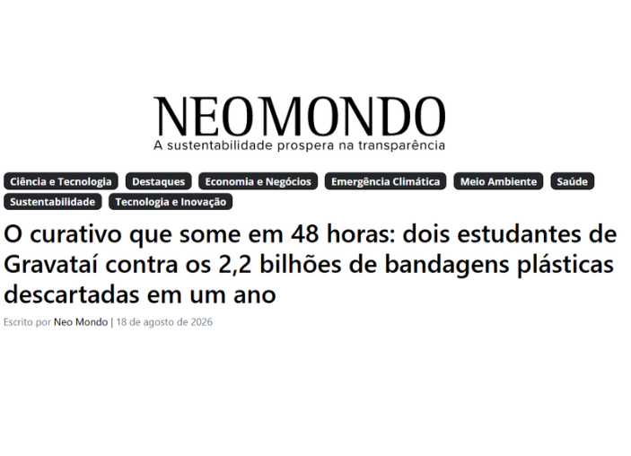
The bandage that disappears in 48 hours: two students from Gravataí take on the 2.2 billion plastic bandages discarded in a year.Read the story ↗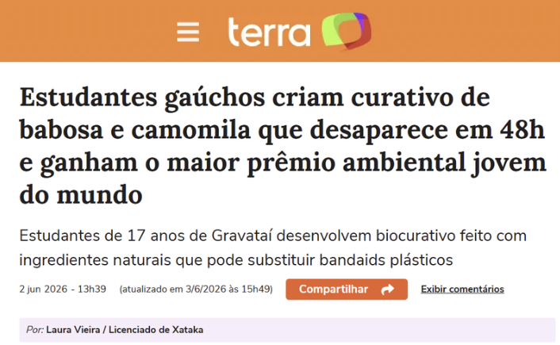
Students from Rio Grande do Sul create an aloe vera and chamomile bandage that disappears in 48 hours and win the world's top environmental award for youthRead the story ↗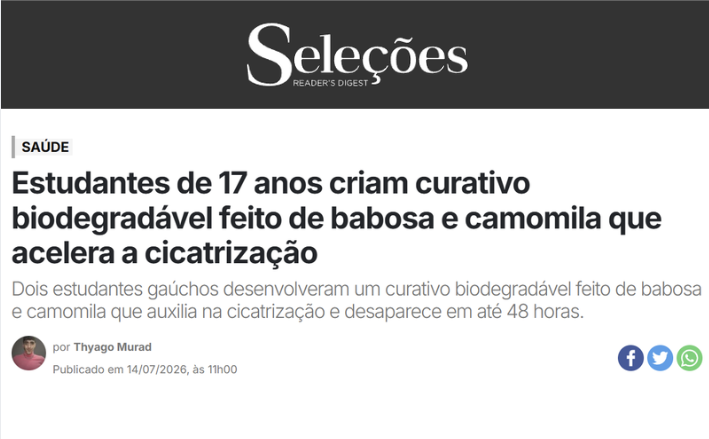
17-year-old students create a biodegradable bandage made from aloe vera and chamomile that accelerates healing.Read the story ↗✦Young ideas. Real solutions.
A student-led initiative focused on developing technological solutions applicable to real-world problems. The group operates on two fronts: the development of institutional websites and systems automation [...] Atrián’s primary objective is the professional development of its members and those who benefit from its work in the fields of programming and systems management [...] Atrián strives to leave a legacy of solidarity and practical experience for future generations.
— Mais Matéria newspaper, October 24, 2026
Read the story ↗Built through Atrián
Beyond the code
We seek to extract the maximum equitable power of multilocal technology.
@ATRIANRS ↗ ATRIANRS@GMAIL.COM
Leadership through execution
✦Making room for young ideas to become working projects.
I organized and hosted Inova Prado, the region’s first student innovation hackathon. Prizes included 6,000.00 BRL, a trip to Semana Caldeira (one of the state’s largest innovation events, with +15K participants), and entry into a deep-tech incubation program at Unisinos (one of the state’s largest and most renowned universities).
On the road
Before there was a hackathon, there were visits. We went to the schools in person to invite students to take part.
Backed by
Six institutions backed Inova Prado and helped turn it into a real event.
The day itself
Mentors, teams, pitches, judges and the moment the winners were announced.
Community
Volunteering, civic tech and the work I took part in beyond the headline projects.
Volunteering
Executive Director of Project Development of the Gravataí chapter of Rotary International's Global Youth Service Network
I developed, cocreated and executed 19 projects, including clothing drives, initiatives to teach technology in daycare centers, recreational activities for Children’s Day and Easter, and the installation of cigarette butt receptacles throughout the city, in agreement with the local government. I also raised +13K BRL ($2,500) and +4.7 tons of food through the weekly sale of brigadeiros, jar cakes, and local culinary items, as well as the monthly collection of hundreds of kilograms of food in partnership with the Gravataí Food Bank.
Interact Gravataí-Prado, 2025-2026
Civic tech
Built in response to the 2024 floods in Rio Grande do Sul, GSSA was designed to help people locate shelters and understand available assistance through a lightweight web platform.
Recognition
NFTE · 2025
A global competition that engages over 10,000 young people from dozens of countries each year to create business solutions aligned with the UN SDGs.
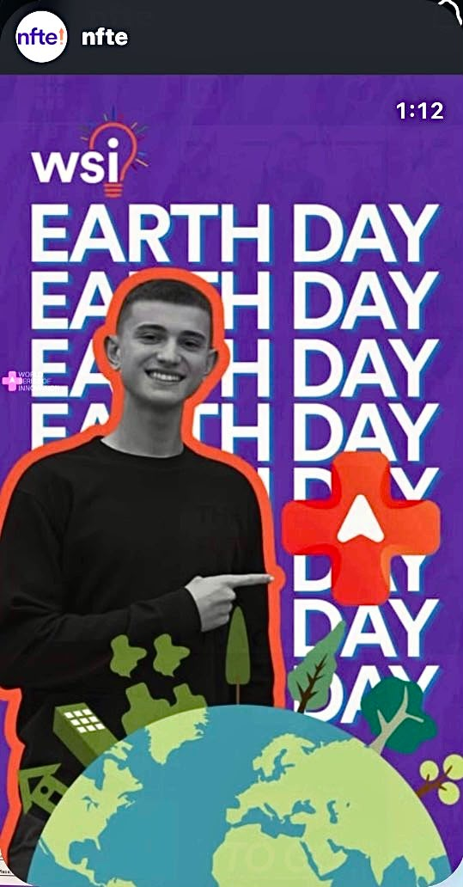
Wall
A wall of other projects I took part in.
Archive
A collection of main honors, awards and public recognitions.
Titles
The full record